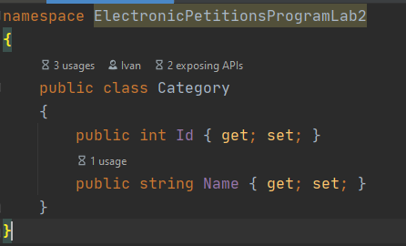

1. Тема, мета та постановка задачі ЛР №2
Тема: КОНСТРУКТОРИ.МОДИФИКАТОРЫ ДОСТУПУ В C# И UML. ДІАГРАМИ КЛАСІВ. ВІДНОШЕННЯ МІЖ КЛАСАМИ
Мета: Здійснити об’єктно-орієнтоване проектування з урахуванням модифікаторів доступу в C# и UML і добавлення конструкторів у діаграму класів та реалізація їх у програмному коді. Вивчити особливості використання різних видів конструкторів. Доповнити програму конструкторами різних видів.
Постановка задачі:
1. Доповнити інтерфейси та реалізації класів методами-конструкторами класів (використати конструктори по умовчанню, ініціалізації (введення значень з клавіатури, завдання їх за виразами та через виклик інших методів-членів класу).
2. Протестувати програму, демонструючи послідовність викликів конструкторів виведенням на екран повідомлень про створення об’єктів
3. Продемонструвати створення об’єктів за допомогою різних видів конструкторів:
3.1. через ініціалізацію значень атрибутів класів списком аргументів, використовуючи конструктор ініціалізації;
3.2. через присвоєння одних об’єктів іншим того самого типу, використовуючи конструктор копіювання;
3.3. створення об’єкта за допомогою конструктора за замовчуванням.
2. UML-діаграма класів
3. Кодування ПЗ
3.1. Файлова структура проекту
3.2 Програмний код
Class Category
Class Client
Class Moderator
Class Petition
Main
Виконання програми
4.1 Посилання на папку з проектом
Посилання на гугл-диск4.2 Exe-file
.exe5 Висновок
Під час виконання даної лабораторної роботи ми здійснили об’єктно-орієнтоване проектування з урахуванням модифікаторів доступу в C# и UML і додаванням конструкторів у діаграму класів та реалізації їх у програмному коді. Також ми вивчили особливості використання різних видів конструкторів і доповнили програму конструкторами різних видів.